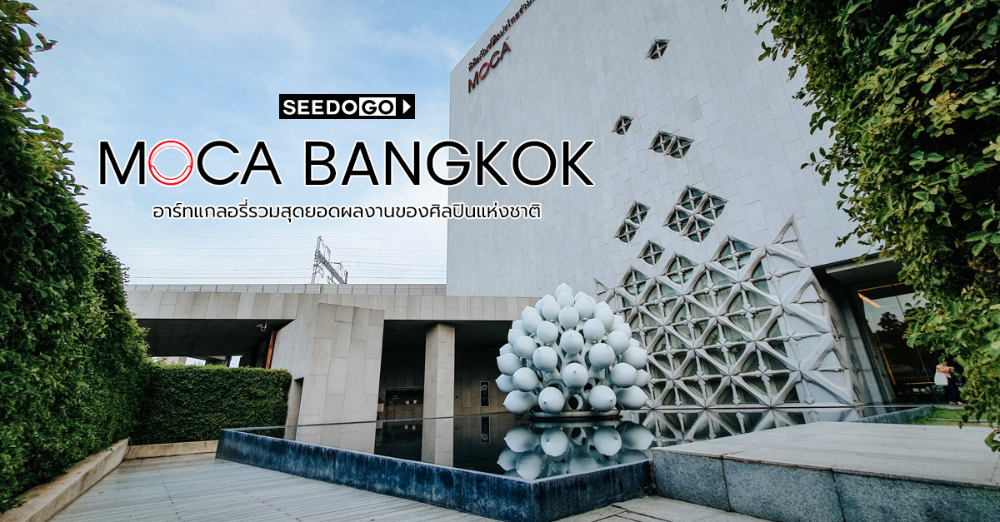
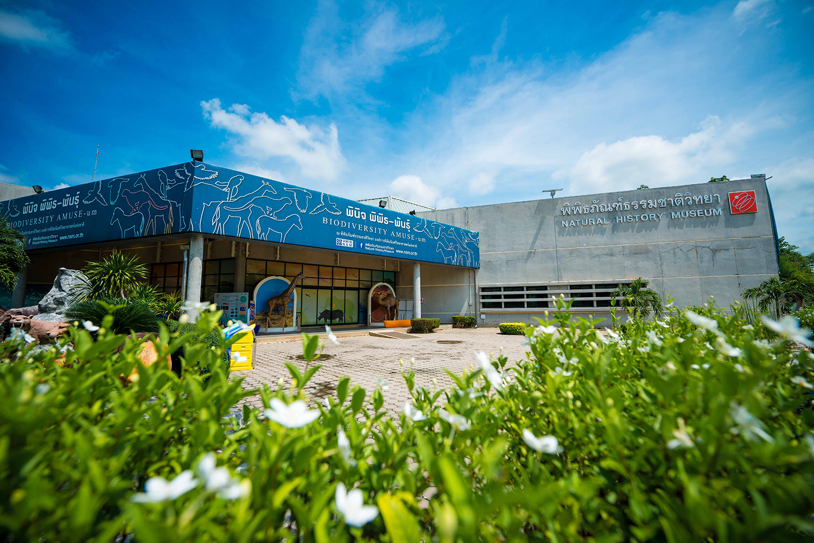

|
 |  |
| บอกได้เลยว่า สยาม เซอร์เพนทาเรียม เป็นพิพิธภัณฑ์งูที่ดีที่สุดในกรุงเทพฯ เลยค่ะ เราจะได้เรียนรู้ทุกอย่างเกี่ยวกับงู วงจรชีวิตอันน่าพิศวง ตั้งแต่การเกิด วิธีการล่า การเอาตัวรอด |
พิพิธภัณฑ์ศิลปะไทยร่วมสมัย เป็นพิพิธภัณฑ์ศิลปะในกรุงเทพมหานคร เป็นพิพิธภัณฑ์เอกชนที่ก่อตั้งโดยบุญชัย เบญจรงคกุล เปิดดำเนินการในปี พ.ศ. 2555 |
พิพิธภัณฑ์ธรรมชาติวิทยาเปิดให้บริการในปี พ.ศ. 2546 เพื่อให้เป็นศูนย์กลางการศึกษา วิจัยด้านธรรมชาติวิทยาและวัสดุอุเทศน ์ของประเทศไทย
|